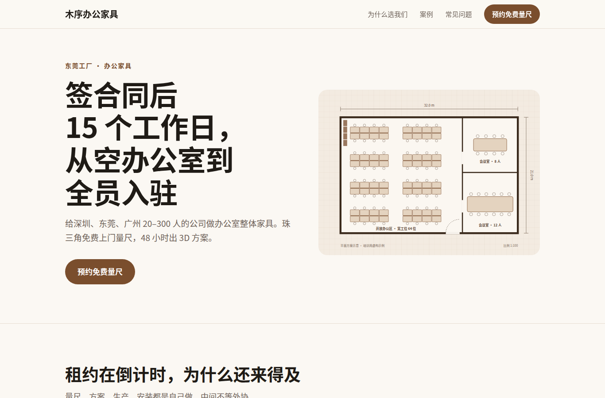
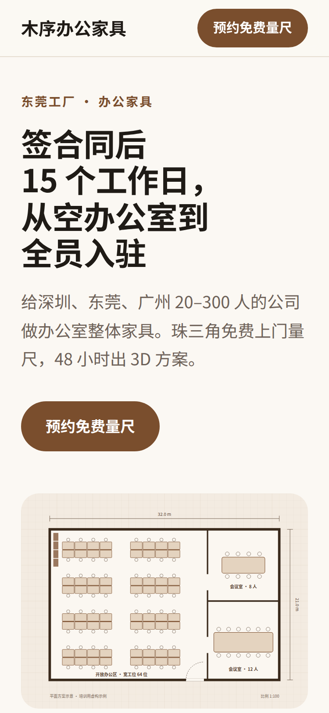
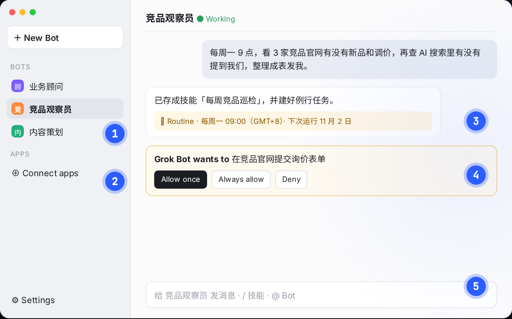

作业四教程｜把你的业务网站上线
 Codex
Codex Grokbot
Grokbot WorkBuddy课件 第 48 页（讲师样例第 43–47 页；平台和社媒第 49–51 页）
WorkBuddy课件 第 48 页（讲师样例第 43–47 页；平台和社媒第 49–51 页）把前面四个作业的产出拼成一个手机能打开的网址：首屏用作业二的一句话和主视觉，中间是作业三的视频，FAQ 来自作业一，最后是表单。示例网站在 跟做样例_木序办公家具/site/，双击 index.html 就能看。


开始前确认手里有这些，缺哪个先用占位，不要停下来补：
| 来自 | 文件 | 用在 |
|---|---|---|
| 作业零 | 业务卡片.md |
首屏文案、卖点、案例 |
| 作业一 | 知识库/FAQ素材.md |
FAQ 区块 + FAQPage 结构化数据 |
| 作业二 | assets/brand.md、主视觉 |
配色、首屏图 |
| 作业三 | 产出/____.mp4（横版） |
视频区块 |
A写清三件事（10 分钟）
把 作业四-网站上线/网站三件事.md 复制到业务文件夹根目录，填三部分：用户是谁、来网站做什么、要收集什么。这页就是给 Codex 的需求。
示例填得最关键的几行：
| 问题 | 示例的答案 |
|---|---|
| 他打开时最想知道的 3 件事 | 多久能装好（租约在倒计时）；大概多少钱；有没有做过差不多规模的 |
| 看完后做的一件事 | 预约免费上门量尺 |
| 按钮写什么 | 「预约免费量尺」（不写「提交」「了解更多」） |
| 表单字段 | 称呼、手机或微信（必填）；公司人数、期望入驻时间、补充说明（选填） |
完整版：网站三件事.md
B生成首页和表单（40 分钟）
复制模板
把 作业四-网站上线/网站模板/ 里的文件全部复制到业务文件夹的 site/。模板里 SEO 能在代码里做的都预留好了，Codex 只需要替换「改成」开头的占位。
发需求，先看结构
Codex 智能程度调到 High：
#! 发给 Codex
角色：你是我的网站开发助理
目标：交付一个单页网站 site/index.html，手机和电脑都能正常看，能部署到静态托管
输入：网站三件事.md；业务卡片.md；知识库/FAQ素材.md；assets/brand.md 和 assets/ 里的图片；产出/____.mp4
约束：
- 文字全部来自上面的文件，不编数字、资质、客户名；缺的写「待确认」并列给我
- 首屏：一句话结论 + 主视觉 + 一个按钮跳到表单
- FAQ 用 FAQ素材.md 原文，同时写一份内容完全一致的 FAQPage JSON-LD
- 表单只收「网站三件事.md」里写的字段
- 有 site/ 里的模板就在模板上改，不要从头写
验收：手机宽度 375px 下没有横向滚动条；首屏 3 秒能看懂卖什么；表单字段和三件事一致；FAQPage 和页面文字一致
节奏：先给我页面结构（每个区块放什么），我确认后再写代码
Codex：页面结构
| 区块 | 内容 | 来自 |
|---|---|---|
| 首屏 | 「签合同后 15 个工作日，从空办公室到全员入驻」+ 平面方案图 + 按钮「预约免费量尺」 | brand.md、plan.svg |
| 为什么来得及 | 15 个工作日 / 48 小时出方案 / 5 年质保 | 业务卡片 |
| 视频 | 60 秒口播 | 作业三（视频文件还没有，先放封面图占位） |
| 案例 | 深圳 80 人跨境电商，13 个工作日交付 | 业务卡片 |
| 常见问题 | FAQ素材.md 的 5 问原文 | 作业一 |
| 表单 + 联系方式 | 5 个字段；电话、工厂、展厅 | 三件事、事实底稿 |
缺的：Logo（先用文字）、工厂和展厅的门牌号（写到镇和园区为止）。
确认后它开始改代码。
让 Grokbot 改 FAQ 的问法
FAQ 的问题要像客户在搜索框里打的字：
#! 发给 Grokbot「业务顾问」
下面是我网站的 5 个 FAQ 问题。请改成客户在百度、豆包里真会输入的说法，每个给 2 个版本。答案不要动。
1. 多久能装好？
2. 工位大概多少钱？
……
挑顺口的替换进去，答案一个字不改，改了问题要同步改 head 里的 FAQPage。
表单
基础版用第三方表单（讲师现场告诉你用哪个）：在表单后台建好字段，复制它给的「嵌入代码」，让 Codex 替换 site/index.html 里整个 <form>。
检查
- FAQ 写的是事实，每个答案第一句就是结论
- 页面上没有「改成」两个字（让 Codex 搜一遍）
C本地预览，按清单自查（25 分钟）
用浏览器打开，看两轮
- 双击
site/index.html - 看手机效果：Chrome 按 F12 → 左上角手机图标 → 宽度选 375
- 第一轮看首屏：3 秒内能不能看懂卖什么、给谁
- 第二轮看手机：有没有横向滚动条、字有没有挤出去、按钮好不好点
示例第二轮发现：手机上标题把「15 个工作日」拆到了两行。跟 Codex 说「手机上 15 个工作日不要拆行」就修好了。
SEO 8 项自查
#! 发给 Codex
用 seo-check 这个 Skill 检查 site/，逐项写通过或不通过；不通过的直接改，改完给我看改了哪些。
Codex：SEO 8 项
| # | 项目 | 结果 | 依据 |
|---|---|---|---|
| 1 | 标题和描述含地区 + 品类 + 品牌 | 通过 | 标题 34 字，描述 80 字 |
| 2 | 只有一个 H1 | 通过 | <h1 只出现 1 次 |
| 3 | 手机能打开，3 秒出首屏 | 通过 | 375px 无横向滚动；首屏图约 20KB |
| 4 | HTTPS + sitemap + robots | 上线后 | 两个文件已有；HTTPS 部署后才有 |
| 5 | JSON-LD | 通过 | Organization、Service、FAQPage；FAQ 逐字一致 |
| 6 | 关键信息是文字 | 通过 | 公司名、电话、地址都能选中 |
| 7 | 提交收录 | 上线后 | 上线后做 |
| 8 | 联系方式全站一致 | 通过 | 四处一致，和事实底稿一致 |
改了：描述从 85 字删到 80 字；JSON-LD 里的门牌号删了（事实底稿里是「待确认」，不编）；新增 llms.txt。
改完自己对照 SEO8项自查表.md 的「怎么自己看」那一列再核一遍，比如右键「查看网页源代码」，搜 <h1 看是不是只有一个。
填事实底稿
把 事实底稿模板.md 复制成 知识库/事实底稿.md，让 Codex 从知识库里填：
#! 发给 Codex
按 事实底稿模板.md 的格式，从 知识库/ 里填出 知识库/事实底稿.md。找不到的写进「待补」，不要编。填完对照 site/index.html，公司名、电话、地址有不一致的列出来。
网站、FAQ、llms.txt、以后的百科和 1688 店铺，公司信息都照这一份抄。示例：知识库/事实底稿.md
检查
- 手机 375px 宽没有横向滚动条
- SEO 8 项除了第 4、7 项（上线后做），其余都通过
- 网站上的公司名、电话、地址和事实底稿一字不差
D部署上线，接通知（30 分钟）
用哪个托管平台、哪个表单服务，讲师现场通知
下面是通用步骤，具体按钮以平台为准。
- 确认
site/里有index.html，图片路径都是相对路径（assets/...） - 登录托管平台 → 新建项目 → 「直接上传」→ 把
site/文件夹拖进去 - 等 1 分钟，拿到公开网址
- 让 Codex 换网址，再上传一次：
#! 发给 Codex（换成你拿到的网址）
把 site/ 里所有 https://example.com 换成 https://____，包括 index.html、robots.txt、sitemap.xml、llms.txt。改完列出改了几处。
- 用手机流量（关掉 Wi-Fi）打开网址
- 提交一条测试线索，看自己能不能收到通知。通知两种接法：表单服务后台打开邮件或企业微信通知；或者让 WorkBuddy 读表单通知邮件，推到企业微信（作业一的日报里加一段「新线索」）
也可以让 Codex 帮你部署
「把 site/ 部署到 ____，先告诉我要装什么、要登录什么，我确认后再做」。它要联网、要装命令行工具时会弹出请求，看清楚再批准。
检查
- 手机流量能打开
- 测试线索提交后收到了通知
- 网址后面加
/robots.txt、/sitemap.xml、/llms.txt都能打开
E交给 Grokbot 每周复测（15 分钟）
写 20 个 GEO 问题
打开 GEO测试问题表.xlsx，点名、品类、比较、追问来源四类各 5 个，用客户真会说的话。表里 D 列有木序的示例，写完删掉。示例填好的：产出/20261028_GEO测试问题表_v1.xlsx
| 类型 | 示例 |
|---|---|
| 点名 | 木序办公家具是哪家公司？ |
| 品类 | 深圳哪家办公家具交货快？ |
| 比较 | 办公家具 ENF 和 E0 级板材差多少？ |
| 追问来源 | 上面推荐的厂家，资料来源是什么？ |
建「竞品观察员」Bot
- Grokbot → + New Bot → 名字「竞品观察员」
- 打开
竞品观察员Bot.md，复制第 1 部分整段作为第一句话；把事实底稿、3 家竞品网址、20 个问题贴进去 - Settings → General → Auto-review：读取公开网页设为 Allow automatically；发邮件、发帖、提交表单、付款、登录设为 Ask first

先手动跑一次，再设成每周
#! 发给「竞品观察员」
现在按职责跑一遍，出周报。
看周报：20 个问题都在；打不开或被拒答的，写了「失败」和原因，没有拿旧数据补。跑顺之后：
#! 发给「竞品观察员」
把刚才的流程存成技能「每周竞品巡检」，建一个例行任务：每周一 09:00 跑这个技能，结果发给我。
它会回复下次运行时间。
新站刚上线，AI 回答里没有你是正常的
AI 搜索重新抓取网站要几天到几周。前几周「提及」「引用官网」是 0 不用慌，坚持每周复测，看趋势。
Codex：每周五更新知识库索引
Codex 左栏 Scheduled（旧版叫 Automations）→ 新建：项目选业务文件夹，选 Worktree，每周五 17:00，提示词：
#! Codex 定时任务的提示词
检查 资料/ 里本周新增或修改的文件，按 organize-files 的规则整理进 知识库/，更新 知识库/总索引.md，最后列出本周新增了哪些。遇到冲突只列出来，不要自己决定以哪份为准。
到这里，三个定时任务配齐了：WorkBuddy 每天 08:30 邮件日报、Grokbot 每周一 09:00 竞品巡检、Codex 每周五 17:00 更新知识库。
F铺信源（课后选做，第一个月）
网站只是 AI 认识你的一处。打开 平台信源清单.xlsx：
- 「账号一致性」第 2 行抄事实底稿，已有的平台账号逐个对：名称、简介、电话地址不一致的先改
- 做 1688 或阿里巴巴国际站的，按「B2B店铺8项」自查
- 账号链接收齐后，在 Codex 里说：「把这些链接写进 site/ 的 Organization 结构化数据 sameAs，再部署一次」
- 「分发计划」排好四周的发布：作业一的 FAQ、作业三的视频、案例按平台改写，改写交给 Codex
交付对照
| 交付 | 你的文件 | 示例 |
|---|---|---|
| 公开网址 | ____ | 示例未部署，本地打开 site/index.html |
| 测试线索的通知截图 | 截图 | — |
| SEO 8 项自查结果 | 截图或文字 | 20261028_SEO自查_v1.md |
| 事实底稿 | 知识库/事实底稿.md |
事实底稿.md |
| 20 个 GEO 问题 + 例行任务 | xlsx + 截图 | 20261028_GEO测试问题表_v1.xlsx |
卡住了
| 现象 | 怎么办 |
|---|---|
| 网站上出现了你没给过的数字或资质 | 「第 __ 区块的 ____ 出处是什么？找不到就删掉」；再把「不编数字」补进 AGENTS.md 教训 |
| 手机上有横向滚动条 | 「375px 宽有横向滚动条，找出是哪个元素超宽并修好」 |
| 视频放不上去 | 先用封面图占位，网站照样上线；视频传到视频号或 B 站后用嵌入代码 |
| 部署后图片不显示 | 图片路径要是 assets/xxx.jpg 这种相对路径，不能是 C:\Users\... |
| 表单提交没反应 | 本地打开时表单不会真的提交，部署后再测；第三方表单要用它的嵌入代码 |
| 想绑定自己的域名 | 国内服务器要 ICP 备案，课上不要求；先用平台给的网址 |